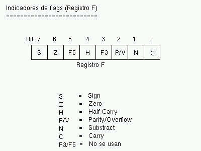

Lenguaje Ensamblador del Z80 (I)
LA ARQUITECTURA DEL SPECTRUM
En esta tercera entrega del curso explicaremos la sintaxis utilizada en los programas en
ensamblador. Para ello comenzaremos con una definición general de la sintaxis del
lenguaje para el ensamblador Pasmo, que será el "traductor" que usaremos entre el
lenguaje ensamblador y el código máquina del Z80.
Posteriormente veremos en detalle los registros: qué registros hay disponibles, cómo se
agrupan, y el registro especial de Flags, enlazando el uso de estos registros con las
instrucciones de carga, de operaciones aritméticas, y de manejo de bits, que serán las
que trataremos hoy.
Esta entrega del curso es delicada y complicada: por un lado, tenemos que explicar las
normas y sintaxis del ensamblador cruzado PASMO antes de que conozcamos la sintaxis del
lenguaje ensamblador en sí, y por el otro, no podremos utilizar PASMO hasta que
conozcamos la sintaxis del lenguaje.
Además, el lenguaje ensamblador tiene disponibles muchas instrucciones diferentes, y nos
resultaría imposible explicarlas todas en un mismo capítulo, lo que nos fuerza a
explicar las instrucciones del microprocesador en varias entregas. Esto implica que
hablaremos de PASMO comentando reglas, opciones de instrucciones y directivas que
todavía no conocemos.
Es por esto que recomendamos al lector que, tras releer los capítulos 1 y 2 de nuestro
curso, se tome esta entrega de una manera especial, leyéndola 2 veces. La "segunda
pasada" sobre el texto permitirá enlazar todos los conocimientos dispersos en el mismo,
y que no pueden explicarse de una manera lineal porque están totalmente
interrelacionados. Además, la parte relativa a la sintaxis de PASMO será una referencia
obligada para posteriores capítulos (mientras continuemos viendo diferentes
instrucciones ASM y ejemplos).
Así pues, os recomendamos leer este capítulo dos veces, una para absorber las normas de
PASMO, y otra para absorber la sintaxis del lenguaje y las instrucciones que
explicaremos (terminando de comprender conceptos de la primera lectura).
SINTAXIS DEL LENGUAJE EN PASMO
En la primera parte de curso se introdujo PASMO, el ensamblador cruzado que recomendamos
para el desarrollo de programas para Spectrum. Este ensamblador traduce nuestros
ficheros de texto .asm con el código fuente de programa (en lenguaje ensamblador) a
ficheros .bin (o .tap/.tzx) que contendrán el código máquina directamente ejecutable por
el Spectrum. Suponemos que ya tenéis instalado PASMO (ya sea la versión Windows o la de
Linux) en vuestro sistema y que sabéis utilizarlo (os recomiendo que releáis la primera
entrega de nuestro curso si no recordáis su uso), y que podéis ejecutarlo dentro del
directorio de trabajo que habéis elegido (por ejemplo: /home/usuario/z80asm o
C:\z80asm).
El ciclo de desarrollo con PASMO será el siguiente:
- Con un editor de texto, tecleamos nuestro programa en un fichero .ASM con la
sintaxis que veremos a continuación.
- Salimos del editor de texto y ensamblamos el programa con: "pasmo ejemplo1.asm
ejemplo1.bin".
- El fichero bin contiene el código máquina resultante, que podemos POKEar en memoria,
cargar como un bloque CM (LOAD "" CODE) tras nuestro programa BASIC, o bien si el
programa está realizado enteramente en ensamblador, hacer un pequeño cargador (o
usar bin2tap o --bastap) y cargar directamente el programa en el Spectrum.
Todo esto se mostró bastante detalladamente en su momento en el número 1 de nuestro
curso.
Con esto, sabemos ensamblar programas creados adecuadamente, de modo que la pregunta es:
¿cómo debo escribir mi programa para que PASMO pueda ensamblarlo? Es sencillo,
escribiremos nuestro programa en un fichero de texto con extensión (por ejemplo) .asm.
En este fichero de texto se ignorarán las líneas en blanco y los comentarios, que en ASM
de Z80 se introducen con el símbolo ";" (punto y coma), de forma que todo lo que el
ensamblador encuentre a la derecha de un ; será ignorado (siempre que no forme parte de
una cadena). Ese fichero de texto será ensamblado por PASMO y convertido en código
binario.
Lo que vamos a ver a continuación son las normas que debe cumplir un programa para poder
ser ensamblado en PASMO. Es necesario explicar estas reglas para que el lector pueda
consultarlas en el futuro, cuando esté realizando sus propios programas. No te preocupes
si no entiendes alguna de las reglas, cuando llegues al momento de implementar tus
primeras rutinas, las siguientes normas te serán muy útiles:
Normas para las instrucciones:
- Pondremos una sóla instrucción de ensamblador por línea.
- Como existen diferencias entre los "fin de línea" entre Linux y Windows, es
recomendable que los programas se ensamblen con PASMO en la misma plataforma
de S.O. en que se han escrito. Si PASMO intenta compilar en Windows un
programa ASM escrito en un editor de texto de Linux (con retornos de carro
de Linux) es posible que obtengamos errores de compilación (aunque no es
seguro). Si os ocurre al compilar los ejemplos que os proporcionamos (están
escritos en Linux) y usáis Windows, lo mejor es abrir el fichero .ASM con
notepad y grabarlo de nuevo (lo cual lo salvará con formato de retornos de
carro de Windows). El fichero "regrabado" con Notepad podrá ser ensamblado
sin problemas.
- Además de una instrucción por línea podremos añadir etiquetas (para
referenciar a dicha línea, algo que veremos posteriormente) y comentarios
(con ';').
Normas para los valores numéricos:
- Todos los valores numéricos se considerarán, por defecto, escritos en
decimal.
- Para introducir valores números en hexadecimal los precederemos del carácter
"$", y para escribir valores numéricos en binario lo haremos mediante el
carácter "%".
- Podremos también especificar la base del literal poniendoles como prefijo
las cadena &H ó 0x (para hexadecimal) o &O (para octal).
- Podemos especificar también los números mediante sufijos: Usando una "H"
para hexadecimal, "D" para decimal, "B" para binario u "O" para octal (tanto
mayúsculas como minúsculas).
Normas para cadenas de texto:
- Podemos separar las cadenas de texto mediante comillas simples o dobles.
- El texto encerrado entre comillas simples no recibe ninguna interpretación,
excepto si se encuentran 2 comillas simples consecutivas, que sirven para
introducir una comilla simple en la cadena.
- El texto encerrado entre comillas dobles permite introducir caracteres
especiales al estilo de C/C++ como \n, \r o \t (nueva línea, retorno de
carro, tabulador...).
- El texto encerrado entre comillas dobles también admite \xNN para introducir
el carácter correspondiente a un número hexadecimal NN.
- Una cadena de texto de longitud 1 (un carácter) puede usarse como una
constante (valor ASCII del carácter) en expresiones como, por ejemplo,
'C'+10h.
Normas para los nombres de ficheros:
- Si vemos que nuestro programa se hace muy largo, podemos partir el fichero
en varios ficheros e incluirlos mediante directivas INCLUDE (para incluir
ficheros ASM) o INCBIN (para incluir código máquina ya compilado). Al
especificar nombres de ficheros, deberán estar entre dobles comillas o
simples comillas.
Normas para los identificadores:
- Los identificadores son los nombres usados para etiquetas y símbolos
definidos mediante EQU y DEFL.
- Podemos utilizar cualquier cadena de texto, excepto los nombres de las
palabras reservadas de ensamblador.
Normas para las etiquetas:
- Una etiqueta es un identificador de texto que ponemos poner al principio de
cualquier línea de nuestro programa.
- Podemos añadir el tradicional sufijo ":" a las etiquetas, pero también es
posible no incluirlo si queremos compatibilidad con otros ensambladores que
no lo soporten (por si queremos ensamblar nuestro programa con otro
ensamblador que no sea pasmo).
- Para PASMO, cualquier referencia a una etiqueta a lo largo del programa se
convierte en una referencia a la posición de memoria donde se ensambla la
instrucción o dato donde hemos colocado la etiqueta. Podemos utilizar así
etiquetas para hacer referencia a nuestros gráficos, variables, datos,
funciones, lugares a donde saltar, etc.
Directivas:
- Tenemos a nuestra disposición una serie de directivas para facilitarnos la
programación, como DEFB o DB para introducir datos en crudo en nuestro
programa, END para finalizar el programa, IF/ELSE/ENDIF en tiempo de
compilación, INCLUDE e INCBIN, MACRO y REPT.
- Una de las directivas más importantes es ORG, que indica la posición origen
donde almacenar el código que la sigue. Podemos utilizar diferentes
directivas ORG en un mismo programa.
- Iremos viendo el significado de las directivas conforme las vayamos usando,
pero es aconsejable consultar el manual
de PASMO para conocer más sobre ellas.
Operadores:
- Podemos utilizar los operadores típicos +, -, *. /, así como otros
operadores de desplazamiento de bits como >> y <<.
- Tenemos disponibles operadores de comparación como EQ, NE, LT, LE, GT, GE o
los clásicos =, !=, <, >, <=, >=.
- Existen también operadores lógicos como AND, OR, NOT, o sus variantes &, |,
!.
- Los operadores sólo tienen aplicación en tiempo de ensamblado, es decir, no
podemos multiplicar o dividir en tiempo real en nuestro programa usando * o
/. Estos operadores están pensados para que podamos poner expresiones como
((32*10)+12), en lugar del valor numérico del resultado, por ejemplo.
ASPECTO DE UN PROGRAMA EN ENSAMBLADOR
Veamos un ejemplo de programa en ensamblador que muestra el uso de algunas de estas
normas, para que las podamos entender fácilmente mediante los comentarios incluidos:
; Programa de ejemplo para mostrar el aspecto de
; un programa típico en ensamblador para PASMO.
; Copia una serie de bytes a la videomemoria con
; instrucciones simples (sin optimizar).
ORG 40000
valor EQU 1
destino EQU 18384
; Aqui empieza nuestro programa que copia los
; 7 bytes desde la etiqueta "datos" hasta la
; videomemoria ([16384] en adelante).
LD HL, destino ; HL = destino (VRAM)
LD DE, datos ; DE = origen de los datos
LD B, 6 ; numero de datos a copiar
bucle: ; etiqueta que usaremos luego
LD A, (DE) ; Leemos un dato de [DE]
ADD A, valor ; Le sumamos 1 al dato leído
LD (HL), A ; Lo grabamos en el destino [HL]
INC DE ; Apuntamos al siguiente dato
INC HL ; Apuntamos al siguiente destino
DJNZ bucle ; Equivale a:
; B = B-1
; if (B>0) goto Bucle
RET
datos DEFB 127, %10101010, 0, 128, $FE, %10000000, FFh
END
|
Algunos detalles a tener en cuenta:
- Como veis, se pone una instrucción por línea.
- Los comentarios pueden ir en sus propias líneas, o dentro de líneas de instrucciones
(tras ellas).
- Podemos definir "constantes" con EQU para hacer referencia a ellas luego en el
código. Son constantes, no variables, es decir, se definen en tiempo de ensamblado y
no se cambian con la ejecución del programa. Su uso está pensado para poder escribir
código más legible y que podamos cambiar los valores asociados posteriormente de una
forma sencilla (es más fácil cambiar el valor asignado en el EQU, que cambiar un
valor en todas sus apariciones en el código).
- Podemos poner etiquetas (como "bucle" y "datos" -con o sin dos puntos, son
ignorados-) para referenciar a una posición de memoria. Así, la etiqueta "bucle" del
programa anterior hace referencia a la posición de memoria donde se ensamblaría la
siguiente instrucción que aparece tras ella. Las etiquetas se usan para poder saltar
a ellas (en los bucles y condiciones) mediante un nombre en lugar de tener que
calcular nosotros la dirección del salto a mano y poner direcciones de memoria. Es
más fácil de entender y programar un "DJNZ bucle" que un "DJNZ 40008", por ejemplo.
En el caso de la etiqueta "datos", nos permite referenciar la posición en la que
empiezan los datos que vamos a copiar.
- Los datos definidos con DEFB pueden estar en cualquier formato numérico, como se ha
mostrado en el ejemplo: decimal, binario, hexadecimal tanto con prefijo "$" como con
sufijo "h", etc.
Podéis ensamblar el ejemplo anterior mediante:
pasmo --tapbas ejemplo.asm ejemplo.tap
|
Una vez cargado y ejecutado el TAP en el emulador de Spectrum, podréis ejecutar el código
máquina en BASIC con un "RANDOMIZE USR 40000", y deberéis ver una pantalla como la
siguiente:
Los píxeles que aparecen en el centro de la pantalla se corresponden con los valores
numéricos que hemos definido en "datos", ya que los hemos copiado desde "datos" hasta la
videomemoria. No os preocupéis por ahora si no entendéis alguna de las instrucciones
utilizadas, las iremos viendo poco a poco y al final tendremos una visión global y
concreta de todas ellas.
LOS REGISTROS
Como ya vimos en la anterior entrega, todo el "trabajo de campo" lo haremos con los
registros de la CPU, que no son más que variables de 8 y 16 bits integradas dentro del
Z80 y que por tanto son muy rápidos para realizar operaciones con ellos.
El Z80 tiene una serie de registros de 8 bits con nombres específicos:
- A: El Registro A (de 8 bits) es el acumulador. Es un registro que se utiliza
generalmente como destino de muchas operaciones aritméticas y de comparaciones y
testeos.
- B, C, D, E, H, L: Registros de propósito general, utilizables para gran cantidad de
operaciones, almacenamiento de valores, etc.
- I: Registro de interrupción, no lo utilizaremos en nuestros primeros programas. No
debemos modificar su valor, aunque en el futuro veremos su uso en las interrupciones
del Spectrum.
- R: Registro de Refresco de memoria: lo utiliza internamente la CPU para saber cuándo
debe refrescar la RAM. Su valor cambia sólo conforme el Z80 va ejecutando
instrucciones, de modo que podemos utilizarlo (leerlo) para obtener valores
pseudo-aleatorios entre 0 y 255.
Además, podemos agrupar algunos de estos registros en pares de 16 bits para determinadas
operaciones:
- AF: Formado por el registro A como byte más significativo (Byte alto) y por F como
byte menos significativo (Byte bajo). Si A vale FFh y B vale 00h, AF valdrá
automáticamente "FF00h".
- BC: Agrupación de los registros B y C que se puede utilizar en bucles y para acceder
a puertos. También se utiliza como "repetidor" o "contador" en las operaciones de
acceso a memoria (LDIR, LDDR, etc.).
- DE, HL: Registros de 16 bits formados por D y E por un lado y H y L por otro.
Utilizaremos generalmente estos registros para leer y escribir en memoria en una
operación única, así como para las operaciones de acceso a memoria como LDIR, LDDR,
etc.
Aparte de estos registros, existen otra serie de registros de 16 bits:
- IX, IY: Dos registros de 16 bits pensados para acceder a memoria de forma indexada.
Gracias a estos registros podemos realizar operaciones como: "LD
(IX+desplazamiento), VALOR". Este tipo de registros se suele utilizar pues para
hacer de índices dentro de tablas o vectores. El desplazamiento es un valor numérico
de 8 bits en complemento a 2, lo que nos permite un rango desde -128 a +127 (puede
ser negativo para acceder a posiciones de memoria anteriores a IX).
- SP: Puntero de pila, como veremos en su momento apunta a la posición actual de la
"cabeza" de la pila.
- PC: Program Counter o Contador de Programa. Como ya vimos en la anterior entrega,
contiene la dirección de la instrucción actual a ejecutar. No modificaremos PC
directamente moviendo valores a este registro, sino que lo haremos mediante
instrucciones de salto (JP, JR, CALL...).
Por último, tenemos disponible un banco alternativo de registros, conocidos como Shadow
Registers o Registros Alternativos, que se llaman igual que sus equivalentes principales
pero con una comilla simple detrás: A', F', B', C', D'. E', H' y L'.
En cualquier momento podemos intercambiar el valor de los registros A, B, C, D, E, F, H y
L con el valor de los registros A', B', C', D', E', F', H' y L' mediante la instrucción
de ensamblador "EXX", como veremos más adelante. La utilidad de estos Shadow Registers
es almacenar valores temporales y proporcionarnos más registros para operar: podremos
intercambiar el valor de los registros actuales con los temporales, realizar operaciones
con los registros sin perder los valores originales (que al hacer el EXX se quedarán en
los registros Shadow), y después recuperar los valores originales volviendo a ejecutar
un EXX.
Ya conocemos los registros disponibles, veamos ahora ejemplos de operaciones típicas que
podemos realizar con ellos:
- Meter valores en registros (ya sean valores numéricos directos, de memoria, o de
otros registros).
- Incrementar o decrementar los valores de los registros.
- Realizar operaciones (tanto aritméticas como lógicas) entre los registros.
- Acceder a memoria para escribir o leer.
Por ejemplo, las siguientes instrucciones en ensamblador serían válidas:
LD C, $00 ; C vale 0
LD B, $01 ; B vale 1
; con esto, BC = $0100
LD A, B ; A ahora vale 1
LD HL, $1234 ; HL vale $1234 o 4660d
LD A, (HL) ; A contiene el valor de (4660)
LD A, (16384) ; A contiene el valor de (16384)
LD (16385), A ; Escribimos en (16385) el valor de A
ADD A, B ; Suma: A = A + B
INC B ; Incrementamos B (B = 1+1 =2)
; Ahora BC vale $0200
INC BC ; Incrementamos BC
; (BC = $0200+1 = $0201)
|
Dentro del ejemplo anterior queremos destacar el operador "()", que significa "el
contenido de la memoria apuntado por". Así, "LD A, (16384)" no quiere decir "mete en A
el valor 16384" (cosa que además no se puede hacer porque A es un registro de 8 bits),
sino "mete en A el valor de 8 bits que contiene la celdilla de memoria 16384"
(equivalente a utilizar en BASIC las funciones PEEK y POKE, como en LET A=PEEK
16384).
Cabe destacar un gran inconveniente del juego de instrucciones del Z80, y es que no es
ortogonal. Se dice que el juego de instrucciones de un microprocesador es ortogonal
cuando puedes realizar todas las operaciones sobre todos los registros, sin presentar
excepciones. En el caso del Z80 no es así, ya que hay determinadas operaciones que
podremos realizar sobre unos registros pero no sobre otros.
Así, si el Z80 fuera ortogonal, podríamos ejecutar cualquiera de estas operaciones:
LD BC, 1234h
LD HL, BC
LD SP, BC
EX DE, HL
EX BC, DE
ADD HL, BC
ADD DE, BC
|
Sin embargo, como el Z80 no tiene un juego de instrucciones (J.I. desde este momento)
ortogonal, hay instrucciones del ejemplo anterior que no son válidas, es decir, que no
tienen dentro de la CPU un microcódigo para que el Z80 sepa qué hacer con ellas:
LD SP, BC ; NO: No se puede cargar el valor un registro en SP,
; sólo se puede cargar un valor inmediato NN
EX BC, DE ; NO: Existe EX DE, HL, pero no EX BC, DE
ADD DE, BC ; NO: Sólo se puede usar HL como operando destino
; en las sumas de 16 bytes con registros de propósito
; general.
|
Si el J.I. fuera ortogonal, se podría realizar cualquier operación con cualquier
registro, como por ejemplo:
LD BC, DE
LD DE, HL
LD SP, BC ; Se podría realizar
|
Pero "LD SP, BC" es una excepción, y no existe como instrucción del Z80. Y como el caso
de "LD SP, BC" existen muchos otros de instrucciones que aceptan unos registros como
operandos pero no otros.
La única solución para programar sin tratar de utilizar instrucciones no permitidas es la
práctica: con ella acabaremos conociendo qué operaciones podemos realizar y sobre qué
registros se pueden aplicar, y realizaremos nuestros programas con estas limitaciones en
mente. Iremos viendo las diferentes excepciones caso a caso, pero podemos encontrar las
nuestras propias gracias a los errores que nos dará el ensamblador al intentar ensamblar
un programa con una instrucción que no existe para el Z80.
No os preocupéis: es sólo una cuestión de práctica. Tras haber realizado varios programas
en ensamblador ya conoceréis, prácticamente de memoria, qué instrucciones son válidas
para el microprocesador y cuáles no.
EL REGISTRO DE FLAGS
Hemos hablado del registro de 8 bits F como un registro especial. La particularidad de F
es que no es un registro de propósito general donde podamos introducir valores a
voluntad, sino que los diferentes bits del registro F tienen un significado propio que
cambia automáticamente según el resultado de operaciones anteriores.
Por ejemplo, uno de los bits del registro F, el bit nº 6, es conocido como "Zero Flag", y
nos indica si el resultado de la última operación (para determinadas operaciones, como
las aritméticas o las de comparación) es cero o no es cero. Si el resultado de la
anterior operación resultó cero, este FLAG se pone a uno. Si no resultó cero, el flag se
pone a cero.
¿Para qué sirve pues un flag así? Para gran cantidad de tareas, por ejemplo para bucles
(repetir X veces una misma tarea poniendo el registro BC al valor X, ejecutando el mismo
código hasta que BC sea cero), o para comparaciones (mayor que, menor que, igual
que).
Veamos los diferentes registros de flags (bits del registro F) y su utilidad:
| 
|
| Los indicadores de flag del registro F |
Flag S (sign o signo): Este flag se pone a uno si el resultado de la operación
realizada en complemento a dos es negativo (es una copia del bit más significativo
del resultado). Si por ejemplo realizamos una suma entre 2 números en complemento a
dos y el resultado es negativo, este bit se pondrá a uno. Si el resultado es
positivo, se pondrá a cero. Es útil para realizar operaciones matemáticas entre
múltiples registros: por ejemplo, si nos hacemos una rutina de multiplicación o
división de números que permita números negativos, este bit nos puede ser útil en
alguna parte de la rutina.
Flag Z (zero o cero): Este flag se pone a uno si el resultado de la última
operación que afecte a los flags es cero. Por ejemplo, si realizamos una operación
matemática y el resultado es cero, se pondrá a uno. Este flag es uno de los más
útiles, ya que podemos utilizarlo para múltiples tareas. La primera es para los
bucles, ya que podremos programar código como:
; Repetir algo 100 veces
LD B, 100
bucle:
(...) ; código
DEC B ; Decrementamos B (B=B-1)
JR NZ bucle ; Si el resultado de la operación anterior
; no es cero (NZ = Non Zero), saltar a la
; etiqueta bucle y continuar. DEC B hará
; que el flag Z se ponga a 1 cuando B llegue
; a cero, lo que afectará al JR NZ.
; Como resultado, este trozo de código (..)
; se ejecutará 100 veces.
|
Como veremos en su momento, existe una instrucción equivalente a DEC B + JR NZ
que es más cómoda de utilizar y más rápida que estas 2 instrucciones juntas
(DJNZ), pero se ha elegido el ejemplo que tenéis arriba para que veáis cómo
muchas operaciones (en este caso DEC) afectan a los flags, y la utilidad que
estos tienen a la hora de programar.
Además de para bucles, también podemos utilizarlo para comparaciones. Supongamos
que queremos hacer en ensamblador una comparación de igualdad, algo como:
IF C = B THEN GOTO 1000
ELSE GOTO 2000
|
Si restamos C y B y el resultado es cero, es que ambos registros contienen el
mismo valor:
LD A, C ; A = C
; Tenemos que hacer esto porque no existe
; una instruccion SUB B, C . Sólo se puede
; restar un registro al registro A.
SUB B ; A = A-B
JP Z, Es_Igual ; Si A=B la resta es cero y Z=1
JP NZ, No_Es_Igual ; Si A<>B la resta no es cero y Z=0
(...)
Es_Igual:
(...)
No_Es_Igual:
(...)
|
Flag H (Half-carry o Acarreo-BCD): Se pone a uno cuando en operaciones BCD existe
un acarreo del bit 3 al bit 4. Es muy probable que no lleguemos a utilizarlo
nunca.
Flag P/V (Parity/Overflow o Paridad/Desbordamiento): En las operaciones que
modifican el bit de paridad, este bit vale 1 si el número de unos del resultado de
la operación es par, y 0 si es impar. Si, por contra, el resultado de la operación
realizada necesita más bits para ser representado de los que nos provee el registro,
tendremos un desbordamiento, con este flag a 1. Este mismo bit sirve pues para 2
tareas, y nos indicará una u otra (paridad o desbordamiento) según sea el tipo de
operación que hayamos realizado. Por ejemplo, tras una suma, su utilidad será la de
indicar el desbordamiento.
El flag de desbordamiento se activará cuando en determinadas operaciones pasemos
de valores 11111111b a 00000000b, por "falta de bits" para representar el
resultado o viceversa . Por ejemplo, en el caso de INC y DEC con registros de 8
bits, si pasamos de 0 a 255 o de 255 a 0.
Flag N (Substract o Resta): Se pone a 1 si la última operación realizada fue una
resta. Se utiliza en operaciones aritméticas.
Flag C (Carry o Acarreo): Este flag se pone a uno si el resultado de la operación
anterior no cupo en el registro y necesita un bit extra para ser representado. Este
bit es ese bit extra. Veremos su uso cuando tratemos las operaciones aritméticas, en
esta misma entrega.
Así pues, resumiendo:
- El registro F es un registro especial cuyo valor no manejamos directamente, sino que
cada uno de sus bits tiene un valor especial y está a 1 o a 0 según ciertas
condiciones de la última operación realizada que afecte a dicho registro.
- Por ejemplo, si realizamos una operación y el resultado de la misma es cero, se
pondrá a 1 el flag de Zero (Z) del registro F, que no es más que su bit número 6.
- No todas las operaciones afectan a los flags, iremos viendo qué operaciones afectan
a qué flags conforme avancemos en el curso, en el momento en que se estudia cada
instrucción.
- Existen operaciones que se pueden ejecutar con el estado de los flags como
condición. Por ejemplo, realizar un salto a una dirección de memoria si un
determinado flag está activo, o si no lo está.
INSTRUCCIONES LD
Las operaciones que más utilizaremos en nuestros programas en ensamblador serán sin duda
las operaciones de carga o instrucciones LD. Estas operaciones sirven para:
- Meter un valor en un registro.
- Copiar el valor de un registro en otro registro.
- Escribir en memoria (en una dirección determinada) un valor.
- Escribir en memoria (en una dirección determinada) el contenido de un registro.
- Asignarle a un registro el contenido de una dirección de memoria.
La sintaxis de LD en lenguaje ensamblador es:
Así, gracias a las operaciones LD podemos:
Asignar a un registro un valor numérico directo de 8 o 16 bits.
LD A, 10 ; A = 10
LD B, 200 ; B = 200
LD BC, 12345 ; BC = 12345
|
Copiar el contenido de un registro a otro registro:
LD A, B ; A = B
LD BC, DE ; BC = DE
|
Escribir en posiciones de memoria:
LD (12345), A ; Memoria[12345] = valor en A
LD (HL), 10 ; Memoria[valor de HL] = 10
|
Leer el contenido de posiciones de memoria:
LD A, (12345) ; A = valor en Memoria[12345]
LD B, (HL) ; B = valor en Memoria[valor de HL]
|
Nótese cómo el operador () nos permite acceder a memoria. En nuestros ejemplos, LD A,
(12345) no significa meter en A el valor 12345 (cosa imposible al ser un registro de 16
bits) sino almacenar en el registro A el valor que hay almacenado en la celdilla número
12345 de la memoria del Spectrum.
En un microprocesador con un juego de instrucciones ortogonal, se podría usar cualquier
origen y cualquier destino sin distinción. En el caso del Z80 no es así. El listado
completo de operaciones válidas con LD es el siguiente:
Leyenda:
N = valor numérico directo de 8 bits (0-255)
NN = valor numérico directo de 16 bits (0-65535)
r = registro de 8 bits (A, B, C, D, E, H, L)
rr = registro de 16 bits (BC, DE, HL, SP)
ri = registro índice (IX o IY).
|
Listado:
; Carga de valores en registros
LD r, N
LD rr, NN
LD ri, NN
; Copia de un registro a otro
LD r, r
LD rr, rr
; Acceso a memoria
LD r, (HL)
LD (NN), A
LD (HL), N
LD A, (rr) ; (excepto rr=SP)
LD (rr), A ; (excepto rr=SP)
LD A, (NN)
LD rr, (NN)
LD ri, (NN)
LD (NN), rr
LD (NN), ri
; Acceso indexado a memoria
LD (ri+N), r
LD r, (ri+N)
LD (ri+N), N
|
Además, tenemos una serie de casos "especiales":
; Manipulación del puntero de pila (SP)
LD SP, ri
LD SP, HL
; Para manipular el registro I
LD A, I
LD I, A
|
Veamos ejemplos válidos y cuál sería el resultado de su ejecución:
; Carga de valores en registros
; registro_destino = valor
LD A, 100 ; LD r, N
LD BC, 12345 ; LD rr, NN
; Copia de registros en registros
; registro_destino = registro_origen
LD B, C ; LD r, r
LD A, B ; LD r, r
LD BC, DE ; LD rr, rr
; Acceso a memoria
; (Posicion_memoria) = VALOR o bien
; Registro = VALOR en (Posicion de memoria)
LD A, (HL) ; LD r, (rr)
LD (BL), B ; LD (rr), r
LD (12345), A ; LD (NN), A
LD A, (HL) ; LD r, (rr)
LD (DE), A ; LD (rr), r
LD (BC), 1234h ; LD (BC), NN
LD (12345), DE ; LD (NN), rr
LD IX, (12345) ; LD ri, (NN)
LD (34567), IY ; LD (NN), ri
; Acceso indexado a memoria
; (Posicion_memoria) = VALOR o VALOR = (Posicion_memoria)
; Donde la posicion es IX+N o IY+N:
LD (IX+10), A ; LD (ri+N), r
LD A, (IY+100) ; LD r, (ri+N)
LD (IX-30), 100 ; LD (ri+N), N
|
Haré hincapié de nuevo en el mismo detalle: debido a que el juego de instrucciones del
Z80 no es ortogonal, en ocasiones no podemos ejecutar ciertas operaciones que podrían
sernos útiles con determinados registros. En ese caso tendremos que buscar una solución
mediante los registros y operaciones válidas de que disponemos.
Un detalle muy importante respecto a las instrucciones de carga: en el caso de las
operaciones LD, el registro F no ve afectado ninguno de sus indicadores o flags en
relación al resultado de la ejecución de las mismas (salvo en el caso de "LD A, I" y "LD
A, R").
Esto quiere decir que una operación como "LD A, 0", por ejemplo, no activará el flag de
Zero del registro F.
CPU Z80: LOW ENDIAN
Un detalle más sobre nuestra CPU: a la hora de trabajar con datos de 16 bits (por
ejemplo, leer o escribir de memoria) conviene tener en cuenta que nuestro Z80 es una CPU
del tipo LOW-ENDIAN, es decir, que si almacenamos en la posición de memoria 0000h el
valor "1234h", el contenido de las celdillas de memoria sería:
| Posición |
Valor |
| 0000h |
34h |
| 0001h |
12h |
En otro tipo de procesadores del tipo Big-Endian, los bytes aparecerían escritos en
memoria de la siguiente forma:
| Posición |
Valor |
| 0000h |
12h |
| 0001h |
34h |
Debemos tener en cuenta este dato a la hora de escribir valores de 16 bits en memoria y
recuperarlos posteriormente mediante operaciones de acceso a la memoria.
INCREMENTOS Y DECREMENTOS
Entre las operaciones disponibles, tenemos la posibilidad de incrementar (INC) y
decrementar (DEC) en 1 unidad el contenido de determinados registros de 8 y 16 bits, así
como de posiciones de memoria apuntadas por HL o por IX/IY más un offset (desplazamiento
de 8 bits).
Por ejemplo:
LD A, 0 ; A = 0
INC A ; A = A+1 = 1
LD B, A ; B = A = 1
INC B ; B = B+1 = 2
INC B ; B = B+1 = 3
LD BC, 0
INC BC ; BC = 0001h
INC B ; BC = 0101h (ya que B=B+1 y es la parte alta)
DEC A ; A = A-1 = 0
|
Veamos las operaciones INC y DEC permitidas:
INC r
DEC r
INC rr
DEC rr
Donde r puede ser A, B, C, D, E, H o L, y 'rr' puede ser BC, DE, HL, SP, IX o IY.
Esta instrucción incrementa o decrementa el valor contenido en el registro
especificado.
INC (HL)
DEC (HL)
Incrementa o decrementa el byte que contiene la dirección de memoria apuntada por
HL.
INC (IX+N)
DEC (IX+N)
INC (IY+N)
DEC (IY+N)
Incrementa o decrementa el byte que contiene la dirección de memoria resultante
de sumar el valor del registro IX o el registro IY con un valor numérico de 8
bits en complemento a dos.
Por ejemplo, las siguientes instrucciones serían válidas:
INC A ; A = A+1
DEC B ; B = B-1
INC DE ; DE = DE+1
DEC IX ; IX = IX-1
INC (HL) ; (HL) = (HL)+1
INC (IX-5) ; (IX-5) = (IX-5)+1
DEC (IY+100) ; (IY+100) = (IY+100)+1
|
Unos apuntes sobre la afectación de los flags ante el uso de INC y DEC:
- Si un registro de 8 bits vale 255 (FFh) y lo incrementamos, pasará a valer 0.
- Si un registro de 16 bits vale 65535 (FFFFh)y lo incrementamos, pasará a valer 0.
- Si un registro de 8 bits vale 0 y lo decrementamos, pasará a valer 255 (FFh).
- Si un registro de 16 bits vale 0 (0h) y lo decrementamos, pasará a valer 65535
(FFh).
- En estos desbordamientos no se tomará en cuenta para nada el bit de Carry (acarreo)
de los flags (registro F), ni tampoco lo afectarán tras ejecutarse.
- Las operaciones INC y DEC sobre registros de 16 bits (BC, DE, HL, IX, IY, SP) no
afectan a los flags. Esto implica que no podemos usar como condición de flag zero
para un salto el resultado de instrucciones como "DEC BC", por ejemplo.
- Las operaciones INC y DEC sobre registros de 8 bits y sobre la memoria no afectan al
flag de acarreo, pero sí que pueden afectar al flag de Zero (Z), al de
Paridad/Overflow (P/V), al de Signo (S) y al de Half-Carry (H).
Lo siguiente que vamos a ver es una tabla de afectación de flags (que podréis ver en
muchas tablas de instrucciones del Z80, y a las que conviene que os vayáis
acostumbrando). Esta tabla indica cómo afecta cada instrucción a cada uno de los
flags:
Flags
Instrucción |S Z H P N C|
----------------------------------
INC r |* * * V 0 -|
INC [HL] |* * * V 0 -|
INC [ri+N] |* * * V 0 -|
INC rr |- - - - - -|
DEC r |* * * V 1 -|
DEC rr |- - - - - -|
Donde:
r = registro de 8 bits
rr = registro de 16 bits (BC, DE, HL, IX, IY)
ri = registro índice (IX, IY)
N = desplazamiento de 8 bits (entre -128 y +127).
Y respecto a los flags:
- = El flag NO se ve afectado por la operación.
* = El flag se ve afectado por la operación acorde al resultado.
0 = El flag se pone a cero.
1 = El flag se pone a uno.
V = El flag se comporta como un flag de Overflow acorde al resultado.
? = El flag toma un valor indeterminado.
|
OPERACIONES MATEMATICAS
Las operaciones aritméticas básicas para nuestro Spectrum son la suma y la resta, tanto
con acarreo como sin él. A partir de ellas deberemos crearnos nuestras propias rutinas
para multiplicar, dividir, etc.
Suma: ADD (Add)
Nuestro microprocesador Z80 puede realizar sumas de 8 y 16 bits internamente. La
instrucción utilizada para ello es "ADD" y el formato es:
Las instrucciones disponibles para realizar sumas se reducen a:
ADD A, s
ADD HL, ss
ADD ri, rr
Donde:
s: Cualquier registro de 8 bits (A, B, C, D, E, H, L),
cualquier valor inmediato de 8 bits (en el rango 0-255 o -128+127
en complemento a dos), cualquier dirección de memoria apuntada por HL,
y cualquier dirección de memoria apuntada por un registro índice con
desplazamiento de 8 bits.
ss: Cualquier registro de 16 bits de entre los siguientes: BC, DE, HL, SP.
ri: Uno de los 2 registros índices (IX o IY).
rr: Cualquier registro de 16 bits de entre los siguientes excepto el mismo
registro índice origen: BC, DE, HL, IX, IY, SP.
|
Esto daría la posibilidad de ejecutar cualquiera de las siguientes instrucciones:
; ADD A, s
ADD A, B ; A = A + B
ADD A, 100 ; A = A + 100
ADD A, [HL] ; A = A + [HL]
ADD A, [IX+10] ; A = A + [IX+10]
; ADD HL, ss
ADD HL, BC ; HL = HL + BC
ADD HL, SP ; HL = HL + SP
; ADD ri, rr
ADD IX, BC ; IX = IX + BC
ADD IY, DE ; IY = IY + DE
ADD IY, IX ; IY = IY + IX
ADD IX, IY ; IX = IX + IY
|
Por contra, estas instrucciones no serían válidas:
ADD B, C ; Sólo A puede ser destino
ADD BC, DE ; Sólo puede ser destino HL
ADD IX, IX ; No podemos sumar un registro índice a él mismo
|
La afectación de los flags ante las operaciones de sumas es la siguiente:
- Para "ADD A, s", el registro N (Substraction) se pone a 0 (lógicamente, ya que sólo
se pone a uno cuando se ha realizado una resta). El registro P/V se comporta como un
registro de Overflow e indica si ha habido overflow (desbordamiento) en la
operación. El resto de flags (Sign, Zero, Half-Carry y Carry) se verán afectados de
acuerdo al resultado de la operación de suma.
- Para "ADD HL, ss" y "ADD ri, rr", se pone a 0 el flag N, y sólo se verá afectado el
flag de acarreo (C) de acuerdo al resultado de la operación.
O, en forma de tabla de afectación:
Flags
Instrucción |S Z H P N C|
----------------------------------
ADD A, s |* * * V 0 *|
ADD HL, ss |- - ? - 0 *|
ADD ri, rr |- - ? - 0 *|
|
Las sumas realizadas por el Spectrum se hacen a nivel de bits, empezando por el bit de
más a la derecha y yendo hacia la izquierda, según las siguientes reglas:
0 + 0 = 0
0 + 1 = 1
1 + 0 = 1
1 + 1 = 10 (=0 con acarreo)
|
Al sumar el último bit, se actualizará el flag de acarreo si es necesario.
Por ejemplo:
*
00000100
+ 00000101
-----------
00001001
(* = acarreo de la suma del bit anterior, 1+1=10)
|
Si la suma del último bit (bit 7) requiere un bit extra, se utilizará el Carry Flag del
registro F para almacenarlo. Supongamos que ejecutamos el siguiente código:
LD A, %10000000
LD B, %10000000
ADD A, B
|
El resultado de la ejecución de esta suma sería: A=128+128=256. Como 256 (100000000b)
tiene 9 bits, no podemos representar el resultado con los 8 bits del registro A, de modo
que el resultado de la suma sería realmente: A = 00000000 y CarryFlag = 1.
Resta: SUB (Substract)
En el caso de las restas, sólo es posible realizar (de nuevo gracias a la no
ortogonalidad del J.I.) la operación "A=A-origen", donde "origen" puede ser cualquier
registro de 8 bits, valor inmediato de 8 bits, contenido de la memoria apuntada por
[HL], o contenido de la memoria apuntada por un registro índice más un desplazamiento.
El formato de la instrucción no requiere 2 operandos, ya que el registro destino sólo
puede ser A:
Concretamente:
SUB r ; A = A - r
SUB N ; A = A - N
SUB [HL] ; A = A - [HL]
SUB [rr+d] ; A = A - [rr+d]
|
Por ejemplo:
SUB B ; A = A - B
SUB 100 ; A = A - 100
SUB [HL] ; A = A - [HL]
SUB [IX+10] ; A = A - [IX+10]
|
Es importante recordar que en una operación "SUB X", la operación realizada es "A=A-X" y
no "A=X-A".
Por otra parte, con respecto a la afectación de flags, tenemos la siguiente:
Flags: S Z H P N C
-----------------------
Afectación: * * * V 1 *
|
Es decir, el flag de N (substraction) se pone a 1, para indicar que hemos realizado una
resta. El flag de P/V (Parity/Overflow) se convierte en indicar de Overflow y queda
afectado por el resultado de la resta. El resto de flags (Sign, Zero, Half-Carry y
Carry) quedarán afectados de acuerdo al resultado de la misma (por ejemplo, si el
resultado es Cero, se activará el Flag Z).
Suma con acarreo: ADC (Add with carry)
Sumar con acarreo dos elementos significa realizar la suma de uno con el otro y,
posteriormente, sumarle el estado del flag de Carry. Es decir:
"ADC A, s" equivale a "A = A + s + CarryFlag"
"ADC HL, ss" equivale a "HL = HL + ss + CarryFlag"
("s" y "ss" tienen el mismo significado que en ADD y SUB).
|
La tabla de afectación de flags sería la siguiente:
Flags
Instrucción |S Z H P N C|
----------------------------------
ADC A,s |* * * V 0 *|
ADC HL,ss |* * ? V 0 *|
|
La suma con acarreo se utiliza normalmente para sumar las partes altas de palabras de 16
bytes. Se suma la parte baja con ADD y luego la parte alta con ADC para tener en cuenta
el acarreo de la suma de la parte baja.
Resta con acarreo: SBC (Substract with carry)
Al igual que en el caso de la suma con acarreo, podemos realizar restas con acarreo, que
no son más que realizar una resta de los 2 operandos, tras lo cual restamos además el
valor del bit de Carry Flag:
"SBC A, s" equivale a "A = A - s - CarryFlag"
"SBC HL, ss" equivale a "HL = HL - ss - CarryFlag"
|
La tabla de afectación de flags (en este caso con N=1, ya que es una resta):
Flags
Instrucción |S Z H P N C|
----------------------------------
SBC A,s |* * * V 1 *|
SBC HL,ss |* * ? V 1 *|
|
COMPLEMENTO A DOS
A lo largo del presente texto hemos hablado de números en complemento a dos. Complemento
a dos es una manera de representar números negativos en nuestros registros de 8 bits,
utilizando para ello como signo el bit más significativo (bit 7) del byte.
Si dicho bit está a 0, el número es positivo, y si está a 1 es negativo. Así:
01111111 (+127)
01111110 (+126)
01111101 (+125)
01111100 (+124)
(...)
00000100 (+4)
00000011 (+3)
00000010 (+2)
00000001 (+1)
00000000 (0)
11111111 (-1)
11111110 (-2)
11111101 (-3)
11111100 (-4)
(...)
10000011 (-125)
10000010 (-126)
10000001 (-127)
10000000 (-128)
|
Podemos averiguar cuál es la versión negativa de cualquier número positivo (y viceversa),
invirtiendo el estado de los bits y sumando uno:
+17 = 00010001
-17 = 11101110 (Invertimos unos y ceros)
= +1 (Sumamos 1)
= 11101111 (-17 en complemento a dos)
|
Como veremos en unos minutos, se eligió este sistema para representar los números
negativos para que las operaciones matemáticas estándar funcionaran directamente sobre
los números positivos y negativos. ¿Por qué no utilizamos directamente la inversión de
los bits para representar los números negativos y estamos sumando además 1 para
obtenerlos? Sencillo: si no sumáramos uno y simplemente invirtiéramos los bits,
tendríamos 2 ceros (00000000 y 11111111) y además las operaciones matemáticas no
cuadrarían (por culpa de los dos ceros). La gracia del complemento a dos es que las
sumas y restas binarias lógicas (ADD, ADC, SUB y SBC) funcionan:
Sumemos -17 y 32:
-17 = 11101111
+ +32 = 00100000
-----------------
1 00001111
|
El resultado es 00001111, es decir, 15, ya que 32-17=15. El flag de carry se pone a 1,
pero lo podemos ignorar, porque el flag que nos indica realmente el desbordamiento (como
veremos a continuación) en operaciones de complemento a dos es el flag de Overflow.
Sumemos ahora +17 y -17:
+17 = 00010001
+ -17 = 11101111
----------------------
1 00000000
|
Como podéis ver, al sumar +17 y -17 el resultado es 0. Si representáramos los números
negativos simplemente como la inversa de los positivos, esto no se podría hacer:
+17 = 00010001
+ -17 = 11101110 <--- (solo bits invertidos)
----------------------
1 11111111 <--- Nos da todo unos, el "cero" alternativo.
|
En complemento a dos, las sumas y restas de números se pueden realizar a nivel lógico
mediante las operaciones estándar del Z80. En realidad para el Z80 no hay más que
simples operaciones de unos y ceros, y somos nosotros los que interpretamos la
información de los operandos y del resultado de una forma que nos permite representar
números negativos.
En otras palabras: cuando vemos un uno en el bit más significativo de un resultado, somos
nosotros los que tenemos que interpretar si ese bit representa un signo negativo o no:
si sabemos que estamos operando con números 0-255, podemos tratarlo como un resultado
positivo. Si estábamos operando con números en complemento a dos, podemos tratarlo como
un resultado en complemento a dos. Para el microprocesador, en cambio, no hay más que
unos y ceros.
Para acabar, veamos cuál es la diferencia entre el Flag de Carry (C) y el de Overflow (V)
a la hora de realizar sumas y restas. El primero (C) se activará cuando se produzca un
desbordamiento físico a la hora de sumar o restar 2 números binarios (cuando necesitemos
un bit extra para representarlo). El segundo (V), se utilizará cuando se produzca
cualquier sobrepasamiento operando con 2 números en complemento a dos.
Como acabamos de ver, en complemento a dos el último bit (el bit 7) nos indica el signo,
y cuando operamos con 2 números binarios que nosotros interpretamos como números en
complemento a dos no nos basta con el bit de Carry. Es el bit de Overflow el que nos
dará información sobre el desbordamiento a un nivel lógico.
En pocas palabras, el bit de Carry se activará si pasamos de 255 a 0 o de 0 a 255
(comportándose como un bit de valor 2 elevado a 8, o 256), y el bit de overflow lo hará
si el resultado de una operación en complemento a dos requiere más de 7 bits para ser
representado.
Mediante ejemplos:
255+1:
11111111
+ 00000001
-----------
1 00000000
C=1 (porque hace falta un bit extra)
V=0
127+1:
01111111
+ 00000001
-----------
10000000
C=0 (no es necesario un bit extra en el registro)
V=1 (en complemento a dos, no podemos representar +128)
|
En el ejemplo anterior, V se activa porque no ha habido desbordamiento físico (no es
necesario un bit extra para representar la operación), pero sí lógico: no podemos
representar +128 con 7 bits+signo en complemento a dos.
INSTRUCCIONES DE INTERCAMBIO
Como ya se ha explicado, disponemos de un banco de registros alternativos (los Shadow
Registers), y podemos conmutar los valores entre los registros estándar y los
alternativos mediante unas determinadas instrucciones del Z80.
El Z80 nos proporciona una serie de registros de propósito general (así como un registro
de flags), de nombres A, B, C, D, E, F, H y L. El micro dispone también de unos
registros extra (set alternativo conocido como Shadow Registers) de nombre A', B', C',
D', E', F', H' y L', que aprovecharemos en cualquier momento de nuestro programa. No
obstante, no podremos hacer uso directo de estos registros en instrucciones en
ensamblador. No es posible, por ejemplo, ninguna de las siguientes instrucciones:
LD B', $10
INC A'
LD HL', $1234
LD A', ($1234)
|
La manera de utilizar estos registros alternativos es conmutar sus valores con los
registros estándar mediante la instrucción "EXX", cuyo resultado es el intercambio de B
por B', C por C', D por D', E por E', H por H' y L por L'. Supongamos que tenemos los
siguientes valores en los registros:
| Registro |
Valor |
Registro |
Valor |
| B |
A0h |
B' |
00h |
| C |
55h |
C' |
00h |
| D |
01h |
D' |
00h |
| E |
FFh |
E' |
00h |
| H |
00h |
H' |
00h |
| L |
31h |
L' |
00h |
En el momento en que realicemos un EXX, los registros cambiarán de valor por la
"conmutación" de bancos:
| Registro |
Valor |
Registro |
Valor |
| B |
00h |
B' |
A0h |
| C |
00h |
C' |
55h |
| D |
00h |
D' |
01h |
| E |
00h |
E' |
FFh |
| H |
00h |
H' |
00h |
| L |
00h |
L' |
31h |
Si realizamos de nuevo EXX, volveremos a dejar los valores de los registros en sus
"posiciones" originales. EXX (mnemónico ensamblador derivado de EXchange), simplemente
intercambia los valores entre ambos bancos.
Aparte de la instrucción EXX, disponemos de una instrucción EX AF, AF' , que, como el
lector imagina, intercambia los valores de los registros AF y AF'. Así, pasaríamos
de:
| Registro |
Valor |
Registro |
Valor |
| A |
01h |
A' |
00h |
| F |
10h |
F' |
00h |
a:
| Registro |
Valor |
Registro |
Valor |
| A |
00h |
A' |
01h |
| F |
00h |
F' |
10h |
Realizando de nuevo un EX AF, AF' volveríamos a los valores originales en ambos
registros.
De esta forma podemos disponer de un set de registros extra con los que trabajar. Por
ejemplo, supongamos que programamos una porción de código donde queremos hacer una serie
de cálculos entre registros y después dejar el resultado en una posición de memoria,
pero no queremos perder los valores actuales de los registros (ni tampoco hacer uso de
la pila, que veremos en su momento). En ese caso, podemos hacer:
; Una rutina a la que saltaremos gracias a la
; etiqueta que definimos aquí:
MiRutina:
; Cambiamos de banco de registros:
EXX
EX AF, AF'
; Hacemos nuestras operaciones
LD A, (1234h)
LD B, A
LD A, (1235h)
INC A
ADD A, B
; (...etc...)
; (...aquí más operaciones...)
; Grabamos el resultado en memoria
LD (1236h), A
; Recuperamos los valores de los registros
EX AF, AF'
EXX
; Volvemos al lugar de llamada de la rutina
RET
|
Aparte de EXX y EX AF, AF' tenemos disponibles 3 instrucciones de intercambio más que no
trabajan con los registros alternativos, sino entre la memoria y registros, y la pila (o
memoria en general) y los registros HL, IX e IY.
| Instrucción |
Resultado |
| EX DE, HL |
Intercambiar los valores de DE y HL. |
| EX (SP), HL |
Intercambiar el valor de HL con el valor de 16 bits de la posición de memoria
apuntada por el registro SP (por ejemplo, para intercambiar el valor de HL con
el del último registro que hayamos introducido en la pila).
|
| EX (SP), IX |
Igual que el anterior, pero con IX. |
| EX (SP), IY |
Igual que el anterior, pero con IY.
|
La primera de estas instrucciones nos puede ser muy útil en nuestros programas en ensamblador, ya que nos
permite intercambiar los valores de los registros DE y HL. Las 3 instrucciones restantes permiten
intercambiar el valor apuntado por SP (en memoria) por el valor de los registros HL, IX o IY.
Como ya hemos comentado cuando hablamos del carácter Low-Endian de nuestra CPU, al escribir en memoria
(también en la pila) primero se escribe el Byte Bajo y luego el Byte Alto. Posteriormente lo leeremos de
la misma forma, de tal modo que si los bytes apuntados en la pila (en memoria) son "FF 00h", al hacer el
EX (SP), HL, el registro HL valdrá "00FFh".
Nótese que aprovechando la pila (como veremos en su momento) también podemos intercambiar los valores de
los registros mediante:
PUSH BC
PUSH DE
POP BC
POP DE
|
Si queréis comprobarlo, podéis hacerlo mediante el siguiente programa:
; Ejemplo que muestra el intercambio de registros
; mediante el uso de la pila (PUSH/POP).
ORG 40000
; Cargamos en DE el valor 12345 y
; realizamos un intercambio de valores
; con BC, mediante la pila:
LD DE, 12345
LD BC, 0
PUSH DE
PUSH BC
POP DE
POP BC
; Volvemos, ahora BC=DE y DE=BC
RET
|
Lo ensamblamos:
pasmo --tapbas cambio.asm cambio.tap
|
Tras esto lo cargamos en un emulador de Spectrum (como un fichero TAP), nos vamos al BASIC y tecleamos
"PRINT AT 10, 10; USR 40000". En pantalla aparecerá el valor "12345", ya que las rutinas llamadas desde
BASIC devuelven sus resultados en BC, y nosotros hemos hecho un intercambio mediante la pila, entre DE y
BC.
En su momento veremos cómo funciona la pila, por ahora basta con saber que tenemos la posibilidad de
intercambiar registros mediante el uso de la misma. Podríamos haber optado por no explicar este pequeño
truco hasta haber hablado de la pila, pero nos parece más conveniente el hecho de tener toda la
información sobre ensamblador agrupada de forma que cuando en el futuro (una vez terminado el curso
completo) busquéis información sobre instrucciones para intercambiar valores de registros, podáis
encontrarla toda junta, como un libro o una guía de referencia. Como hemos comentado al principio de
esta entrega, resulta muy complicado explicar un lenguaje tan interrelacionado de forma que no se
solapen diferentes áreas, de modo que la comprensión total de muchos de los conceptos se alcanzará con
una segunda lectura del curso completo.
EN RESUMEN
En esta entrega hemos visto la sintaxis de los programas en ensamblador (o, al menos, la sintaxis general
de PASMO, el ensamblador que recomendamos), así como una descripción completa del juego de registros del
Z80, incluyendo entre ellos el registro de flags F.
Además, hemos comenzado a ver nuestras primeras instrucciones del lenguaje ensamblador, en especial las
instrucciones de carga, incremento y decremento, y aritméticas.
En la próxima entrega continuaremos detallando las diferentes instrucciones del Z80, ejemplos de uso y su
efecto sobre los flags del registro F. Hasta entonces, os recomiendo la lectura del fichero
"progcard.txt" adjunto con este artículo, donde encontraréis una gran referencia de instrucciones y
flags.
FICHEROS
LINKS